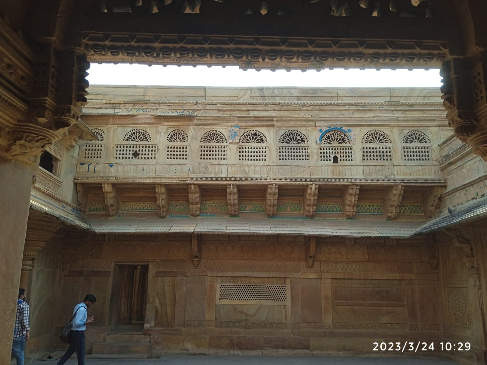
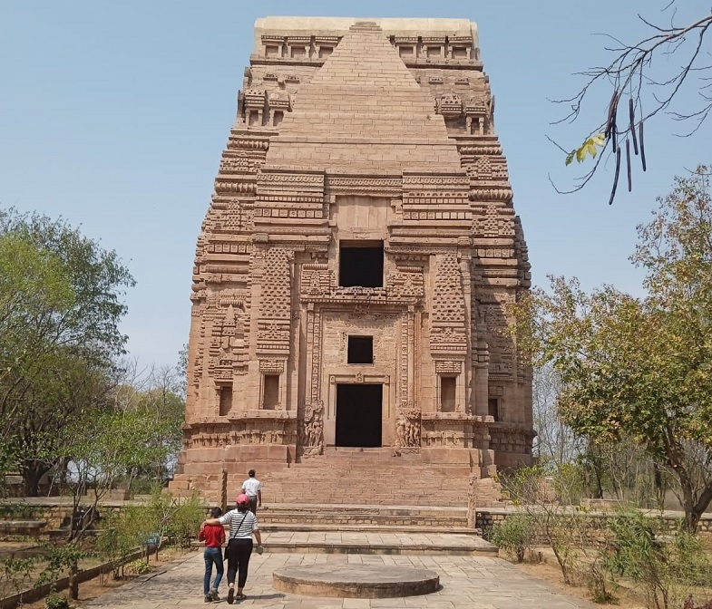
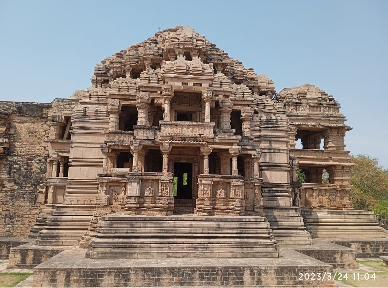
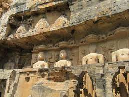

Gwalior Fort: The pearl among the fortresses of Hind
01 Oct 2019
Madhya Pradesh is commonly known as the 'Heart of India', an epithet that perfectly suits a state located geographically and historically in the very centre of the country. And this beautiful Heart of Incredible India is adorned with magnificent forts and palaces, walls and corridors of which time-travel its tourists to the bygone era.
Recognised as one of the most impregnable forts in India is the Gwalior fort, described by the Mughal emperor Babur as 'the pearl among the fortresses of Hind'. Its 10 m high walls, rising sharply on a hill above the royal city of Gwalior contain some of the most magnificent sculptures and architecture.
History of the Gwalior fort
According to historians, the earliest foundation of Gwalior Fort may have been laid in the 6th century AD by Suraj Sen, a Rajput warrior. A fascinating story of Gwalior says that a saint named Gwalipa came wandering to the fort and met the king, who was suffering from a skin disease. When Gwalipa suggested him to take a dip in the sacred pond (now called Suraj Kund), the king was immediately cured. And in gratitude, Suraj Sen named the city Gwalior after the sage.
After being attacked and ruled by various rulers, the Tomars captured the fort in 1398. The most celebrated of the Tomars was Maan Singh. He was the one who constructed several monuments inside the fort complex. The beautiful turquoise blue-tiled Man Mandir Palace was also built during his reign.
After the Tomars, the Mughals ruled Gwalior. With the decline of the Mughals, Marathas, specifically the Schindias ruled Gwalior until the early 19th century. The last assault upon this great fort was led by legendary freedom fighters, the valiant queen of Jhansi and Tantiya Tope during the battle of 1857.
Today, the fort's existing history lives on in its palaces, temples, gateways and its walls. If you want to relive the great battles, brave dynasties and epic stories, you must plan a visit to the exquisite masterpiece in the heart of Incredible India, Gwalior Fort.
Monuments and Temples to explore inside the Gwalior Fort complex
Mansingh Palace (Man Mandir Palace):

The most prominent structure of the Gwalior Fort, Man Mandir Palace is an unforgettable wonder of Rajput Architecture. Built by Raja Man Singh Tomar, the palace served as the main residence of the rulers of the Tomar dynasty for a long period. The palace's exterior is decorated with blue and yellow tiles. Also, there are lattice screens and mosaics with floral and geometrical patterns.
Gujari Mahal

Built for Raja Man Singh's beautiful Gujjar Queen, Mrignayani, Gujari Mahal is a square two-storeyed building which was later converted into an Archaeological Museum. The museum has a wide collection of antiquities, some of them dating back to the 1st century A.D. The rarest exhibit in Gujari Mahal is the famous statue of Shalbhajika which has been described as India's Venus de Milo.
Teli-Ka-Mandir

This temple is a massive, 23 m high Vishnu temple, built in the 8th-9th century. As per the legends, it was built using money donated by oil merchants. Hence, it was named Teli Ka Mandir. Tourists can also find this information in the inscription written on the main gate of the temple.
Sas-Bahu-Temples

Literally meaning temples of the mother-in-law and daughter-in-law, the Sas-Bahu temples were built around 1093. The larger Sas temple, dedicated to Lord Vishnu, has open galleries on all sides, creating a beautiful play of light and shadow on its walls. The smaller Bahu temple is dedicated to Lord Shiva. Some historians claim that the Sas-Bahu temples were originally called Sahastrabahu.
Jain Tirthankaras

When entering the fort through Urwahi Gate, one must witness the fascinating rock-cut sculptures of Jain Tirthankaras. The most impressive of these are a 17 m tall standing statue of Adinath, the first Jain Tirthankara, distinguished by the symbol of the bull; a 10 m seated figure of Neminath, the 22nd Tirthankara, with the symbol of a shell; and a 19 m tall Parshwanath, distinguished by the cobra motif forming a hood behind his head.
Gurudwara Data Bandi Chhod

The Gurudwara is a memorial of the 6th Sikh Guru Hargobind Sahib Ji. According to legends, the Sikh Guru with 52 kings was imprisoned for about two years in the Gwalior Fort. When the Mughal emperor Jehangir decided to free the Guru, he insisted that the kings imprisoned with him should also be freed. Hence, a Gurudwara was built inside the fort to commemorate the event.